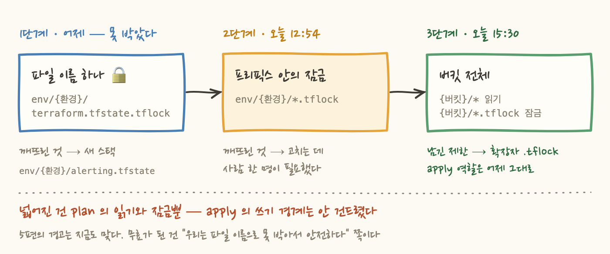
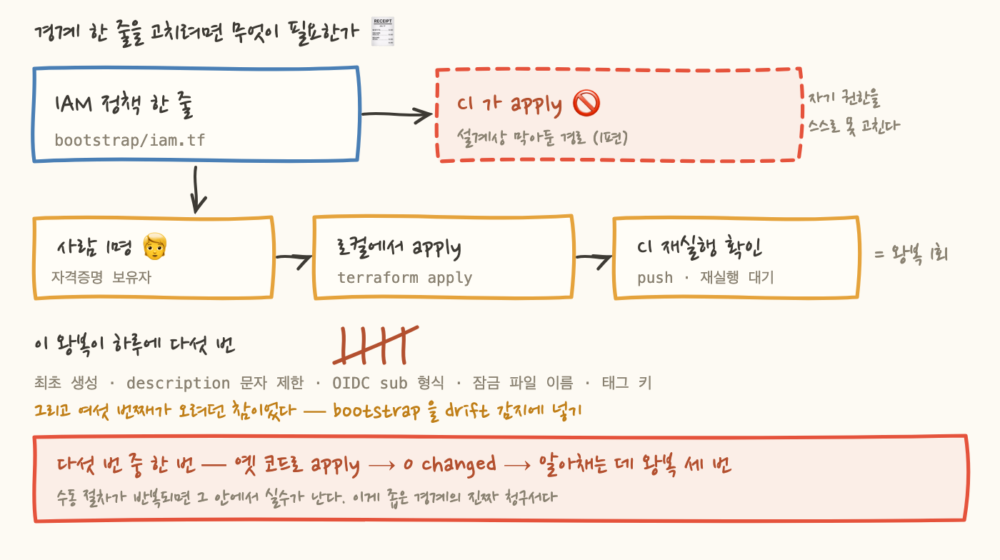

어제 이 시리즈 5편에 이렇게 썼어요. "파일 이름 한 개 차이로 계획만 세우는 역할과 바꿀 수 있는 역할이 갈려요." 잠금 파일 이름을 IAM 정책에 통째로 박아두고, 이게 최종 형태라고 적었습니다.
그 글을 올린 다음 날, 같은 정책을 두 번 넓혔어요. 낮 12시 54분에 프리픽스 단위로, 오후 3시 30분에 버킷 전체로. 두 커밋 사이는 두 시간 반입니다.
변명부터 하지는 않을게요. 틀린 건 "이 경계가 안전하다"는 판단이 아니었어요. 틀린 건 "이 경계를 유지할 수 있다"는 판단이었습니다. 이 글은 왜 그 좁은 경계를 하루도 못 지켰는지에 대한 기록이에요.
5편의 주장은 이랬어요. terraform plan 은 이름이 읽기지만 실제로는 state 잠금 파일(<state 키>.tflock)을 만들었다가 지우기 때문에, plan 역할은 순수 ReadOnly 가 될 수 없다. 그러니 ReadOnlyAccess 한 장으로 막아두면 사람이 -lock=false 로 우회하고 그 우회가 영구화된다. 대신 비대칭으로 만들자 — 인프라 전반은 읽되, 쓰기는 잠금 파일에만.
여기까지는 지금도 맞다고 생각해요. 문제는 그 다음에 붙인 자랑입니다. 저는 쓰기 권한의 대상이 state 가 아니라 잠금 파일 "하나"라는 점을 강조했어요. 프리픽스를 env/{환경}/* 로 열면 같은 프리픽스의 terraform.tfstate 까지 덮어쓸 수 있으니, 우리는 와일드카드가 아니라 파일 이름을 적었다고요.
그러니까 5편이 팔았던 안심은 "이건 프리픽스 와일드카드와 다르다"였습니다. 다르긴 달랐어요. 다만 그 차이가 하루를 못 갔습니다.

알럿 감지 체계를 새 스택으로 올렸어요. 스택이 늘면 state 도 늘어요. 새 state 키는 env/{환경}/alerting.tfstate 가 됐고, 그러면 잠금 파일 이름도 따라서 alerting.tfstate.tflock 이 됩니다. 정책에 못 박아둔 이름은 terraform.tfstate.tflock 이었고요. 안 맞죠.
여기서 진단이 오래 걸렸어요. 읽기는 통과하는데 잠금만 막히기 때문이에요. state 읽기는 env/{환경}/* 라 멀쩡히 되고, 정확히 잠금을 잡는 지점에서만 거부됩니다. 그래서 사람 눈에 먼저 들어오는 문구가 Error acquiring the state lock 이에요. 권한 문제인데 state 문제처럼 보입니다. "누가 잠금을 물고 있나", "이전 실행이 죽으면서 잠금이 남았나"부터 뒤지게 되죠. 실제 원인은 두 줄 아래의 PutObject AccessDenied 인데, 그건 첫 줄에 가려서 잘 안 읽혀요.
그리고 이 사고에는 선행 오판이 하나 더 있었어요. 원래 설계 문서는 알럿 state 키를 alerting/terraform.tfstate 로 잡고 있었는데, 그 프리픽스는 애초에 권한 밖이었어요. 그래서 env/{환경}/ 아래로 옮겼습니다. 그때 제 판단은 "프리픽스가 같으니 기존 권한이 그대로 쓰인다"였어요.
절반만 맞았죠. 프리픽스만 보고 파일명 고정을 못 본 겁니다. 읽기 문은 프리픽스 단위였고 잠금 문만 파일명 단위였는데, 정책을 "프리픽스로 나뉘어 있다"고 뭉뚱그려 기억하고 있었어요. 알럿 스택 ADR 의 결정 2 에 이 오판이 그대로 적혀 있습니다 — "프리픽스만 보고 권한 변경 없이 된다고 판단한 것이 틀렸다."
Error acquiring the state lock 은 원인이 아니라 증상 이름이에요. 그 아래 실제 API 에러를 먼저 읽으세요.ConditionalRequestConflict / Lock Info 가 붙어 있다 → 진짜 잠금 경합. 남은 잠금 파일을 찾을 차례PutObject AccessDenied 가 붙어 있다 → 권한 문제. state 는 건드리지 말고 IAM 정책을 보세요여기가 이 글의 핵심이에요. 첫 번째 균열은 그냥 버그예요. 정책 한 줄 고치면 끝이죠. 문제는 그 "한 줄 고치기"의 가격이었어요.
이 저장소의 bootstrap/ 은 CI 가 쓸 OIDC 역할과 그 IAM 정책을 담고 있어요. 그리고 설계상 CI 의 apply 대상이 아닙니다. 1편에서 정한 결정이에요 — 파이프라인이 자기 권한과 자기 state 버킷을 스스로 고칠 수 있는 경로를 만들지 않는다. 그 경로가 있으면 CI 를 장악한 쪽이 곧 계정을 장악하니까요.
좋은 결정이라고 지금도 생각해요. 대신 이런 뜻이 됩니다. IAM 정책 한 줄을 고치려면, 자격증명을 가진 사람이 로컬에서 apply 해야 해요. PR 초록불로는 아무것도 안 바뀌어요. 그리고 이 저장소에서 그 자격증명을 가진 사람은 사실상 한 명입니다.
그게 하루에 다섯 번 발생했어요.
4번과 6번이 같은 원인이에요. state 접근을 프리픽스·파일명 단위로 정확히 박아뒀기 때문에, 스택이 하나 늘 때마다 사람을 불러야 해요. 그리고 stacks/network, stacks/data 가 예정돼 있었으니 이 패턴은 계속될 예정이었고요.
그런데 실제 비용은 번거로움이 아니었어요. ADR 원문에 이렇게 적었습니다.
"오늘 실제로 옛 코드로 apply 해서 0 changed 가 나왔고, 그걸 알아채는 데 왕복 세 번이 걸렸다."
같은 절차를 하루에 다섯 번 손으로 반복하면, 어느 순간 최신 브랜치를 안 당긴 채로 apply 를 때립니다. 그러면 0 changed 가 나와요. 그게 "고칠 게 없다"인지 "옛 코드를 보고 있다"인지는 화면에 안 적혀 있어요. 그래서 CI 로 올라가고, 또 막히고, 다시 로컬로 내려오고 — 그걸 세 번 왕복했습니다.
수동 절차가 반복되면 그 안에서 실수가 납니다. 좁은 경계가 실제로 청구한 값이 이거예요. 사람을 한 번 더 부르는 게 아니라, 사람이 반복 중에 틀리는 것.

여기는 정확하게 쓸게요. 넓힌 건 plan 역할뿐이에요.
정책 문 이름이 바뀐 게 이 변화를 제일 정직하게 보여줘요. ReadOwnState 는 ReadAnyState 가 됐고, WriteOwnLockfile 은 WriteLockfiles 가 됐고, ListOwnPrefix 는 그냥 ListBucket 이 됐어요. Own 이 전부 사라졌습니다. 자기 것만 본다는 성질을 버린 거예요.
그런데 안 넓힌 것도 분명해요.
첫째, apply 역할의 쓰기 경계는 그대로입니다. 여전히 env/{환경}/* 안이에요. dev apply 역할이 prod state 를 덮어쓰는 건 지금도 막혀 있어요. 넓어진 건 계획만 세우는 쪽의 읽기지, 바꾸는 쪽의 쓰기가 아니에요.
둘째, plan 의 잠금 쓰기도 여전히 확장자로 제한돼 있어요. {버킷}/*.tflock 이지 {버킷}/* 가 아닙니다. .tflock 으로 끝나지 않는 객체 — 즉 state 본문 — 는 plan 역할이 못 씁니다. 그러니까 5편이 경고했던 "프리픽스를 통째로 열면 plan 이 apply 가 된다"는 상황은 만들지 않았어요.
.tflock 이에요구분을 분명히 할게요. 5편의 경고는 지금도 맞습니다. 무효가 된 건 "우리는 파일 이름으로 못 박아뒀으니 안전하다"는 자랑이에요. 원리가 틀린 게 아니라, 그 원리를 지키려고 고른 구현이 유지 불가능했던 거죠.
물론 대가는 있어요. 이제 plan 역할이 전 환경 state 를 읽을 수 있으니, 누군가 시크릿이 담긴 리소스를 state 에 넣으면 노출 범위가 그만큼 넓어집니다. "state 에 시크릿을 넣지 않는다"는 전제에만 기대고 있고 강제 수단은 없어요. 그래서 이건 ADR 로 남겼습니다 — 커밋 메시지에 묻어두면 안 되는 종류의 결정이니까요.
여기서 일반화를 해볼게요. 저는 경계를 그릴 때 좁기만 봤어요. 좁을수록 좋은 설계라고 생각했고, 파일 이름까지 박은 건 그 사고의 끝판이었죠.
실제 비용은 이렇게 계산해야 했어요.
고칠 수 있는 사람이 하나뿐인 경계는, 좁을수록 자주 그 사람을 부르고, 자주 부를수록 그 절차 안에서 실수가 납니다. 그 실수는 보안 사고가 아니라 그냥 "옛 코드로 apply" 같은 시시한 것이지만, 시시한 실수가 자동화 없는 경로에서 반복되면 결국 누군가 절차를 건너뛰게 돼요. 5편에서 -lock=false 를 두고 했던 얘기와 정확히 같은 구조예요 — 정책이 도구를 방해하면 사람이 우회로를 만든다.
그러니 보안 경계를 그릴 때는 두 가지를 같이 세야 해요. "누가 이걸 고칠 수 있나" 그리고 "얼마나 자주 고쳐야 하나." 이 둘을 안 세면 좁은 경계는 설계가 아니라 미래의 자기 자신에게 보내는 청구서가 됩니다.
반대로, 고칠 수 있는 사람이 많고 자동화된 경로가 있다면 경계는 얼마든지 좁게 가도 돼요. apply 역할의 env/{환경}/* 를 안 건드린 이유도 이거예요. 그건 스택이 늘어도 안 고쳐도 되는 경계거든요. 유지 비용이 0 인 경계는 최대한 좁게, 유지 비용이 사람인 경계는 넓게.
마지막으로 글쓰기 얘기를 하나 할게요. 5편에서 저는 "그래서 최종 형태는 …입니다"라고 썼어요. 하루를 못 갔죠.
설계 글의 문제는 결정을 스냅샷으로 적는다는 거예요. 그 시점에 맞는 결정을 적고, 왜 그렇게 했는지를 적어요. 그런데 결정에는 전제가 붙어 있고, 전제는 조용히 바뀝니다. 제 경우엔 "이 환경에 스택은 하나다"라는 전제였고, 그건 제가 명시적으로 세운 적도 없는 전제였어요. 그냥 그때 스택이 하나였을 뿐이죠.
그래서 ADR 을 쓸 때 "재검토해야 할 조건" 절을 반드시 넣기로 했어요. 이번 결정에는 이렇게 적었습니다.
"이게 최종입니다" 대신 "무엇이 바뀌면 이게 무효가 되는지"를 적는 거예요. 그러면 다음에 이 결정을 뒤집는 사람이 — 대체로 그건 미래의 나예요 — 왜 뒤집는지를 처음부터 다시 논증하지 않아도 돼요. 목록에서 해당 줄을 짚고 "이 조건이 발생했습니다" 하면 되니까요.
블로그 글도 마찬가지예요. 이 글에도 유효기간을 하나 붙여둘게요. 계정을 dev/prod 로 분리하면, 이 글의 3장(고칠 수 있는 사람이 한 명)이 통째로 무효가 됩니다. 그때는 경계를 다시 좁힐 수 있어요.
bootstrap 을 사람이 로컬에서 apply 해야 했다. 하루에 다섯 번 그랬고, 그중 한 번은 옛 코드로 apply 해서 0 changed 를 보고 왕복 세 번을 더 썼다..tflock 잠금뿐이고, apply 의 쓰기 경계는 그대로다. 5편의 경고("프리픽스를 통째로 열면 plan 이 apply 가 된다")는 여전히 유효하고, 무효가 된 건 그 자랑이다.